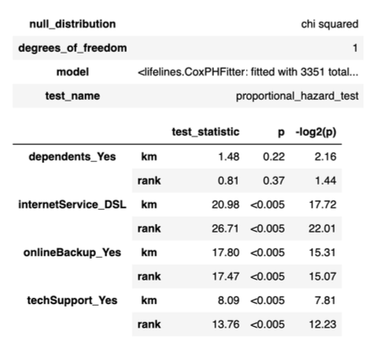
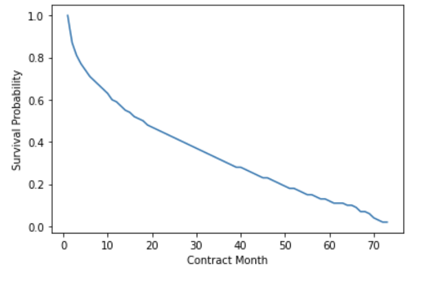

Report
生存分析是一种统计方法，用于检查和预测事件发生前的时间。这种形式的分析起源于医疗保健，关注的是死亡时间。从那时起，生存分析已经成功地应用到全球几乎每个行业中。下面将依据databrick中的IBM’s Telco的客户留存相关数据来分析，解释survival analysis的主要流程。
Data load and Data Process
- 数据介绍:
此数据集中的每条记录代表一个订阅者，并包含有关其各自的人口统计数据、服务计划、媒体使用和订阅状态的相关信息。其中，这个数据集包含了生存分析 所需的两列:
==Tenure:==客户与公司合作的时间(如果仍然是订户)或在流失之前与公司合作的时间。
==Churn:== 一个代表客户是否仍在订阅公司的布尔值。
- **数据读取: **通过spark读取csv中的数据，并以以下schama对bronze_df建表:
|
|
对bronze_df进行处理，以保证分析的重点数据。首先，将bronze_df中的churnString 转换为布尔类型;再将其中的⻓期订阅用户和未使用网络服务的用户过滤， 便得 到silver_df。
|
|
- 构建数据库和转存文件:
因为无法配置delta lake文件系统，所以在复现时使用了csv文件来储存数据。代码如下:
|
|
同时，在mysql中建立Survival_Analysis数据库及相关表格。最后将数据写入database 中，代码如下:
|
|
绘制Kaplan-Meier生存曲线及 log-rank test
-
Kaplan-Meier是一种用于构建生存概率曲线的统计方法。
-
log-rank检验是一种卡方检验，用于检验两个或多个生存曲线在统计上相等的零假设。
代码如下:
|
|
|
|
- x轴代表时间，y轴代表生存概率。
- 解释: 在最简单的情况下，客户存活至少0个月的概率是100%。这由上图中的点 (0,1.0)表示。将生存曲线向下移动到中位数(34个月)，可以说如果客户已经留存了 33个月，则有50%的概率存活至少34个月。
- 置信区间: 生存概率曲线周围的浅蓝色边框表示置信区间。区间越宽，置信度越低。如上图所示，随着时间线的增加，估计的可信度会降低。虽然这种可信度的降低可能是由于数据的减少，但我们通常对近期的预测比⻓期的预测更有信心。
绘制协变量生存曲线
绘制方法函数:
|
|
绘制曲线: 代码较为重复，所以不全部展示。
|
|

对于Kaplan-Meier curves，我们更需要有着显著性差异的变量，这样的变量代表对留存率有着较大的影响。而对于生存曲线距离特别近的变量，我们需要使用log-rank test来判断他们是否在统计意义上是相等的。同时，对于生存曲线相交的变量我们需要尤其注意，因为这种现象通常代表着在不同时间，该变量对于留存率的表现有差别。从上面的Kaplan-Meier curves和 log-rank test中不难看出，gender, phoneService，对于生存概率影响不大，在后续的建模中可以省去。
提取生存概率
|
|
Cox Proportional Hazards Model
- 与Kaplan-Meier相比，Cox比例⻛险可用于多变量分析。
- 与Kaplan-Meier类似，Cox比例⻛险法也可用于绘制生存概率曲线，但其处理方法在数学上有所不同。这个结果被称为adjusted survival probability curves曲线，因为对其他协变量进行了调整。
The Cox Proportional Hazards Equation
-
Kaplan-Meier 用于估计生存概率，Cox 比例风险用于估计风险比。风险比表示存在于两个个体（或群体）之间的风险差异。风险本质上是生存的反义词，或者说是失败的可能性。Kaplan-Meier 估计的是生存概率，而 Cox 比例风险估计的是风险比。这也可以使用
Lifelines完成。 -
Cox 比例风险方程指出，风险比是基线风险和部分风险的乘积。
-
基线危害是指当每个变量被设置为特定值时，就会存在这种危害。例如：
| Variable | Value |
|---|---|
| gender | Female |
| seniorCitizen | No |
| partner | No |
| dependents | No |
| phoneService | Yes |
-
部分危害表示当变量的值与基线不同时发生的危险变化。在任何给定时间，零个或多个变量可以包含与基线不同的值。如下面的等式所示，由此产生的危险变化是参数/变量的线性组合。
-
如果每个变量都设置为相应的基线值，那么部分风险将等于 1（因为 $e^0 = 1$），风险比将等于基线风险。
风险函数：
$$ h(t \mid X) = h_0(t) \cdot \exp(\beta_1 X_1 + \beta_2 X_2 + \cdots + \beta_p X_p) \tag{1} $$风险比：
$$ \frac{h(t \mid X_A)}{h(t \mid X_B)} = \frac{h_0(t) \cdot \exp(\beta^T X_A)}{h_0(t) \cdot \exp(\beta^T X_B)} = \exp\left( \beta^T (X_A - X_B) \right) \tag{2} $$The Proportional Hazards Assumption
- Cox⻛险比方程的一个微妙但关键的元素是，基线⻛险是时间t的函数，而不是参数，而部分⻛险是参数X的函数，而不是时间。这就是所谓的比例⻛险假设的基础。
- ⻛险比假设表明，在Cox比例⻛险模型的背景下，两组之间的⻛险比随时间成正比。因为部分⻛险中没有t意味着部分⻛险会改变⻛险比的某些因素，从而与时间无关。
One-Hot Encode the Categorical Variables
- 为了使用
lifeline拟合Cox⻛险比模型，必须首先对类别列进行一次编码。同时，手动选择对模型的有着较大影响的列。 - 在创建用于拟合模型的数据框架时，要为每个one hot编码变量删除一列，以避免多重共线性。
|
|
Fit the Cox Proportional Hazards Model
在拟合模型时，我们指定alpha = 0.05。这意味着我们将使用95%的置信区间进行统计检验。 代码如下:
|
|
Assess the Results of the Fitted Model
-
每个协变量是否具有统计显著性?
- 在下图中，可以看到每列的p值都小于< 0.005。因此，每一列在统计上都是显著的，可以包括在内。
- 与其他形式的回归类似，如果某个变量在统计上不显著，则可以从分析中删除该列，或者对相应的值重新分类。
-
我们对系数估计值有多大信心?
- 每个系数$\beta$和$exp(\beta)$的上界和下界在下面的模型摘要中给出(如exp(coef) lower95%,exp(coef) Upper 95%)。
- 当变量相应的
box-and-whisker plot与值1相交时，可以认为变量不重要。
-
每个协变量对⻛险比的影响是什么?
-
以
internetService_DSL为例，下面显示coef = -0.22,exp(coef) = 0.80。参 照Cox⻛险比方程，这意味着当客户为其互联网服务订阅DSL时，其⻛险比降低了 0.80(相对于基线)。
|
|
Verify if the Model Adheres to the Proportional Hazard Assumption
在评估拟合模型的结果后，下一步是验证模型是否符合比例⻛险假设。我们将使用三种方法来做到这一点:
- Method 1: Statistical Test
- Method 2: Schoenfield Residuals
- Method 3: Log-log Kaplan-Meier Plots
Statistical Test
使用第一种方法(统计检验)的结果如下所示。从打印输出中可以看到，有三个变量的p值小于0.05，可以得出结论说明我们的模型输入中有三个变量违反了⻛险比假设。正如Kaplan- Meier的图像所暗示的那样，当看到协变量的生存曲线相交时，会出现一些意外情况。
Schoenfeld Residuals
- 除了进行统计测试之外，还可以利用图形输出来评估情况。这可以用
Schoenfeld Residuals来完成。 - 在下面的输出中，每个变量都有两个图。这两幅图的不同之处在于残值显示的顺序:秩变换时间和km变换时间。在我们的模型中，这两种类型的图之间没有明显的差异。
- 解释这些图的方法类似于解释线性回归的残差图。换句话说，当查看这种类型的图时，我们不希望在残差中看到任何类型的规律。当不存在规律时，中间的黑线相对平坦，表明残差与时间无关。
- internetService_DSL: 基本平稳。
- onlineBackup_Yes: 较大变化。
- techSupport_Yes: 在末端存在些许变化。
- dependents_Yes: 基本平稳。
Log-log Kaplan-Meier Plots
- 根据
Statistical Test和Schoenfield Residuals Plot的结果，很明显，我们的模型多次违反了比例⻛险假设。 - 为了从另一个⻆度看待问题，我们可以使用
log-log Kaplan-Meier图。 - 需要注意的是，
Kaplan-Meier的变换只是改变了我们观察数据的尺度。这将有效地将数据更紧密地结合在一起，使其更容易评估。 - 当不违反比例⻛险假设时，
log-log Kaplan-Meier曲线将呈现平行。 - 除了
internetService之外，从下图中可以看出，当$\log (t)$在1和3之间时，Kaplan-Meier曲线大多是平行的，但当$\log (t)$小于1或大于3时，Kaplan-Meier曲线就不那么平行了。
代码如下:
|
|
summary
Cox比例⻛险是最常用的生存分析方法之一。这部分是由于CPH是半参数模型，这意味着结果变量不需要遵循特定的分布。此外，CPH可以很好地适应各种分布。如上所述，支撑该方法的关键假设被称为比例⻛险假设。如果违反了这个假设，就像这里的情况一样，还有许多选择。
Leave the model as-is:当目标是推理时，⻛险比假设是重要的。如果目标是预测，通常可以将重点放在损失度量上，作为选择最终模型的手段。Stratify the existing model:如果违反假设的变量很少，则可以根据这些变量对模型进行分层。使用这种方法将带来不同的基线⻛险。Incorporate time-dependent variables:正如Cox⻛险比方程时所指出的，部分⻛险与时间无关。具体来说，基线危害是时间的函数，而部分危害是参数的函数。当一个变量确实与时间相关时，可以使用交互变量对其进行建模。这被称为扩展Cox比例⻛险模型。Use Cubic Splines or Piecewise Constant Hazards:与其他回归技术类似，可以使用三次样条为模型增加更多的灵活性。可以将其视为将模型分成多个部分。Use a Different Method:虽然Cox比例⻛险方法可以在许多方面进行扩展，包括全参数形式(如三次样条)，但重要的是要知道存在其他生存分析方法。另一种 方法是加速失效时间模型。加速失效时间模型是完全参数化的，可以使用各种分布(如指数分布和威布尔分布)来建模。
Accelerated Failure Time
与Kaplan-Meier和Cox比例⻛险相比，加速失效时间模型是一个参数模型，这意味着假设结果变量遵循指定的分布。参数模型通常不如非参数和半参数模型“灵活”。 与Cox比例⻛险相似，加速失效时间模型具有需要注意的潜在假设。
The Accelerated Failure Time Model Equation
简而言之，A组的⻛险是B组的$\lambda$倍。
$$ S(A) = S(B) \times \lambda $$Fit the Accelerated Failure Time Model
在tutorial中，选择用LogLogistic来确定结果的分布。代码如下:
|
|
Assess the Results of the Fitted Model
-
Is each covariate statistically significant?
- 在下面标记为p的列中，可以看到每列的p值都小于< 0.005。因此，每一列在统计上都是显著的，可以包括在内。
- 与其他形式的回归类似，如果某个变量在统计上不显著，则可以从分析中删除该列，或者对相应的值重新分类。
-
How confident are we in the coefficient estimates?
- 下面的模型总结中提供了每个coefficient和 exp(coefficient) 的上限和下限(例如 exp(coef) 下限 95%，exp(coef) 上限 95%)。
-
What is the effect of each covariate on the hazard ratio?
- 以internetService_DSL为例，下面显示coef = 0.38, exp(coef) = 1.47。参照加速故障时间方程，这意味着当客户使用光纤作为互联网服务时，客户的“流失时间”会加速 1.47倍。请注意，光纤是基线值，对应于上述公式中的A组。
Verify if the Model Adheres to Assumptions
-
正如我们在Cox比例⻛险模型中看到的那样，log-log图对于评估模型是否违反假设非常有用。对于加速失效时间模型，用于y轴的公式取决于为结果变量指定的分布类型。因为我们在这里使用的是log-logistic，所以y轴的公式是:
$$ \frac{\log (1 - survival function)}{ survival function} $$ -
在使用加速失效时间模型时，需要评估两个基本假设:
- 这个模型是否符合比例赔率假设? 当图中的线条平行时，答案是肯定的。
- 指定的分布是否适用于该型号? 当直线是直的时候，答案是肯定的。
-
How does our model fare?
-
在大多数情况下，每个情节中的线都不是平行的。这意味着加速失效时间不适用于指定的模型。
-
在大多数情况下，每张图中的线都是相对笔直的。这意味着选择
log- logistics作为 指定的分布是一个合理的选择。
-
代码如下:
|
|

customer lifetime value
Create Widgets for Dashboard
|
|
Create Table for Dashboard
-
Survival Probability:使用predict_survival_function()从模型中提取的生存概率。 -
Monthly Profit for the Selected Plan:选择的月盈利，可自行设置。 -
Avg Expected Monthly Profit:给定客户的平均期望月利润为Survival Probability$\times$Monthly Profit for the Selected Plan。 -
NPV of Avg Expected Monthly Profit:考虑货币贬值，通常使用Net Present Value. 公式如下Avg Expected Monthly Profit/ ((1 +Internal Rate of Return) ^Contract Month)Internal Rate of Return设置为10%，通常看具体情况设置。
-
Cumulative NPV:NPV of Avg Expected Monthly Profit的累计和。
Create Cumulative NPV Chart for Dashboard
许多组织将投资回收期作为优化支出的一种手段。这张图表说明了你愿意为获得一个用户而花费的最大金额(假设你不愿意在这个群体上赔钱)。
|
|
Create Survival Probability Curve Chart for Dashboard
-
This is the same type of visual seen in the previous notebooks but customized to the parameters entered into the widgets.

summary
-
基本流程:
- 创建数据库，读取数据集。
- 绘制Kaplan-Meier生存曲线及进行 log-rank test。
- 分析对Kaplan-Meier生存曲线有较大影响的变量。
- 拟合模型(如:Cox Proportional Hazards Model)，分析不同变量对生存曲线影响程度。
- 检查是否符合模型的假设。
- 预测分析，得到结果。
-
注意事项:
- Kaplan-Meier生存曲线主要描述不同组别生存曲线间的差异，Cox Proportional Hazards Model可以描述不同变量对生存概率和生存时间的影响。
- 要注意不同模型的假设，以保证模型效果。验证Cox Proportional Hazards Model的假设可以使用Statistical Test，Schoenfield Residuals，Log-log Kaplan-Meier Plots。 accelerated_failure_time模型的假设可以通过绘制log-log km 曲线验证。
- one hot编码可以将Categorical Variables转换为数字向量，对于模型来说会更加易于使用。同时，常常需要drop其中一列，以防止多重共线性。